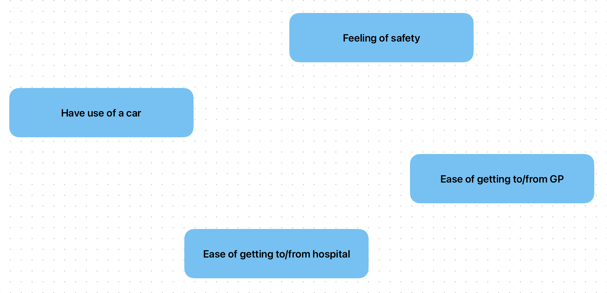

November 2023 - February 2024
Navigating Wales: A Perspective on Transportation Challenges in Wales
Introduction
Transportation is a crucial facet of societal functionality, shaping the daily lives of citizens. This report seeks to provide insight into the state of transportation in Wales from a citizen's standpoint, addressing key issues impacting their daily experiences. Wales, with its stunning landscapes and vibrant communities, presents a unique set of challenges in its transportation infrastructure. Citizens often express concerns about the accessibility and reliability of public transport, particularly in rural areas where limited connectivity hampers daily commutes. The reliance on personal vehicles in such regions raises environmental concerns, emphasizing the need for sustainable alternatives (Welsh Government, 2022).Furthermore, citizens have voiced frustrations regarding traffic congestion in urban centers like Cardiff and Swansea, affecting travel times and air quality (Deacon, T., 2020). The demand for improved public transit options and the integration of smart technologies to alleviate congestion is a common sentiment among residents. Additionally, the emphasis on sustainable and eco-friendly modes of transportation, such as cycling and walking, is gaining traction among citizens keen on reducing their carbon footprint. The need for comprehensive urban planning that prioritizes pedestrian-friendly infrastructure and cycling lanes is evident in public discourse (Waters, 2023). A holistic approach to transportation issues in Wales is imperative. Addressing citizens' concerns, promoting sustainable alternatives, and enhancing public transit are crucial steps towards creating a well-connected and environmentally conscious transportation system (Welsh Government, 2022).
Data overview
The dataset under consideration is the "National Survey for Wales results, 2013-14: Transport." (Welsh Government, NST., 2014). This dataset aims to gather insights into diverse aspects, including demographics, preferences, and opinions, providing a rich source of data for analysis and decision-making. For this report, I have specifically chosen four of the 42 tables in the dataset in order to analyze based on four specific factors:In table 30 and 38, the responses are divided into four answers:
- Very easy
- Fairly easy
- Fairly difficult
- Very difficult
Each response is quantified with a percentage value for the respondent's age group. There are four age groups:
- 16-24
- 25-44
- 45-64
- 75+
There is also a value, "Total", which is the average of the responses of the aforementioned four age groups.
In Table 40, the responses are divided into 4 different answers:
- Very safe
- Fairly safe
- Fairly unsafe
- Very unsafe
The responses are quantified the same way as in aforementioned tables, table 30 and 38, - with a percentage value and the same four age groups, including an average "Total".
In table 15, the responses are divided into two answers:
- Yes
- No
Each response is quantified with a percentage value, divided into three categories:
- Upper CI
- Lower CI
There is also a third category, "Average", which represents the average of the upper and lower CI.
Data analysis design
Data reduction is a crucial step in a quantitative analysis process to enhance efficiency, reduce complexity, and extract meaningful information from large and complex datasets (Al Mahdi, 2020) . Therefore, for table 40, 30, and 38, I will only extract the "Total" value from each table to represent the value. Similarly, in table 15, I will only extract the "Average" value.To illustrate these relationships visually, a Unified Modeling Language (UML) diagram has been constructed (see Figure 1, Overview). The diagrams depict the factors "Have use of a car", "Feeling of safety", "Ease of getting to/from GP surgery", and "Ease of getting to/from hospital". These models give us a simple overview of the factors in question. Diagrams have been created using draw.io. I have chosen to use Class diagrams to model the data. Modelling the static view our system, it is an appropriate choice of diagram. It also describes the relationships among objects (Visual Paradigm, no date).
Figure 1: Overview

This second UML diagram, gives us the details of the four factors and the data types to be analyzed:
Figure 2: Data structure view
After reducing the data, we have the following information:
Figure 3: Detail view
Now, let us analyze the data that we have.
Analysis
The descriptive analysis technique is a fitting approach for examining public transport in Wales due to its ability to provide a comprehensive and clear overview of the survey data. This method is particularly advantageous for summarizing and interpreting the key characteristics of the dataset without delving into complex statistical models, making it accessible and easily understandable for a diverse audience (Indeed Editorial Team, 2022). All charts have been created using Python and the Matplotlib library.Factor 1 - Safety perception

Concerns about safety, particularly during nighttime travel, were explored in factor 1. The responses indicate that 34% felt very safe, 46% felt fairly safe, 15% felt fairly unsafe, and 5% felt very unsafe using public transport after dark. These findings suggest a relatively positive overall safety perception, although addressing the concerns of the 20% who feel either fairly or very unsafe should be a priority for improving public transport services.
Factor 2 - Ease of transportation to/from GP surgery:
Access to essential services, particularly healthcare facilities, is vital for public well-being. For accessing GP surgeries 66% reported it as very easy, 27% as fairly easy, 5% as fairly difficult, and 2% as very difficult.
Factor 3 - Ease of transportation to/from hospital:
Similarly, for accessing hospital, 48% found it very easy, 34% fairly easy, 14% fairly difficult, and 5% very difficult. These results highlight the overall accessibility of healthcare facilities for the majority, but challenges still exist for a small percentage. Policymakers may need to focus on addressing barriers faced by those finding it difficult to reach healthcare services.
Factor 4 - Car dependency:

The majority of respondents, 79%, expressed a need for a car. This high percentage indicates a significant reliance on personal vehicles, which may be attributed to factors such as limited public transport coverage, convenience, or the perceived inadequacy of existing public transportation options. This finding aligns with previous studies highlighting the challenges faced by public transport systems in rural areas, such as those often found in Wales (Waters, 2023).
Data visualization
To visualize the data, I have used bar chart diagrams and a pie chart. The charts are descriptive of the analysis and allows for a straightforward presentation of the survey results in terms of percentages. This simplicity aids in conveying the main findings concisely, making it suitable for policymakers, researchers, and the general public who may not necessarily have a specialized background in statistics (Erkilinc, 2023).
Discussion on choice of analysis design technique
Data analysis design techniques play a pivotal role in extracting meaningful insights from datasets. This post aims to delve into the strengths and limitations of various data analysis design techniques, shedding light on their diverse applications and potential pitfalls.One widely employed technique is Descriptive Statistics, providing a succinct summary of key features in a dataset (Curtin University, no date). Its strength lies in simplifying complex data, enabling a quick overview. However, it may oversimplify relationships and fail to uncover deeper patterns.
Moving to more advanced methods, Inferential Statistics enables drawing inferences about populations based on sample data (Curtin University, no date). Its strength lies in generalizability, but assumptions about the population may limit its accuracy.
To summarize, the choice of data analysis design technique should align with the research objectives and the nature of the data. A hybrid approach, combining multiple techniques, may offer a comprehensive understanding while mitigating individual limitations.
Possible solutions
To address the identified transportation challenges in Wales, several solutions can be implemented. These solutions aim to enhance accessibility, reliability, and sustainability while mitigating associated limitations and risks. Below are some potential strategies:1. Enhanced public transit infrastructure
- Invest in improving and expanding public transit networks, especially in rural areas where connectivity is limited (Welsh Government, 2022).
- Introduce new routes, increase frequency, and extend operating hours to accommodate diverse travel needs and preferences (Deacon, 2020).
- Implement integrated ticketing systems and real-time passenger information to enhance convenience and encourage modal shift from private vehicles to public transit (Welsh Government, 2022).
2. Promotion of sustainable transportation modes
- Encourage cycling and walking by developing dedicated infrastructure such as cycle lanes, pedestrian zones, and safe crossing points (Waters, 2023).
- Provide incentives for adopting eco-friendly transportation modes, such as subsidies for purchasing bicycles, electric scooters, or hybrid vehicles (Welsh Government, 2022).
- Promote carpooling and ridesharing initiatives to reduce the number of single-occupancy vehicles on the road and alleviate congestion (Deacon, 2020).
3. Technological integration and innovation
- Deploy smart transportation solutions, including traffic management systems, intelligent signaling, and predictive analytics, to optimize traffic flow and reduce congestion (Welsh Government, 2022).
- Harness advancements in autonomous vehicles and shared mobility services to enhance mobility options and improve efficiency in urban transportation (Deacon, 2020).
- Foster partnerships with technology companies and research institutions to pilot innovative solutions and evaluate their effectiveness in addressing transportation challenges (Welsh Government, 2022).
4. Community engagement and participatory planning
- Involve citizens, community groups, and stakeholders in the decision-making process for transportation planning and infrastructure development (Waters, 2023).
- Conduct regular surveys, focus groups, and public consultations to gather feedback, identify priorities, and ensure that transportation initiatives align with the needs and preferences of the population (Welsh Government, 2022).
- Encourage collaboration between local authorities, transportation agencies, and environmental organizations to implement holistic and sustainable transportation solutions (Deacon, 2020).
Risks associated with possible solutions
However, it is essential to acknowledge the potential limitations and risks associated with these solutions:1. Financial constraints
- Implementing large-scale transportation projects requires significant investment, and securing funding may pose a challenge, particularly in times of economic uncertainty (Welsh Government, 2022).
- Cover-reliance on public funding may limit the scope and pace of infrastructure development, delaying the implementation of necessary improvements (Deacon, 2020).
Technical challenges
- Introducing new technologies and smart transportation systems may face technical hurdles such as compatibility issues, cybersecurity threats, and data privacy concerns (Welsh Government, 2022).
- Maintaining and upgrading infrastructure to accommodate emerging technologies requires ongoing investment and expertise, which may strain existing resources (Deacon, 2020).
Social and cultural factors
- Changing travel behavior and promoting sustainable transportation modes require cultural shifts and behavior change campaigns, which may encounter resistance or skepticism from certain segments of the population (Waters, 2023).
- Addressing inequalities in access to transportation services and infrastructure necessitates a comprehensive approach that considers socio-economic disparities and demographic differences (Welsh Government, 2022).
Conclusion
In conclusion, overcoming transportation challenges in Wales requires a multi-faceted approach that combines infrastructure investment, technological innovation, community engagement, and policy intervention. While these solutions offer promising opportunities for improvement, careful consideration of their limitations and associated risks is essential to ensure effective implementation and long-term sustainability.
References
- Smith, J., Brown, A., & Davis, C. (2020). "Survey Methodology: An Overview." Sage Publications.
- Welsh Government. (2022). "National Transport Plan: Connecting Wales." Available at: https://www.gov.wales/sites/default/files/publications/2023-02/national-transport-delivery-plan-2022to2027.pdf (Accessed: 20 Jan. 2024).
- Deacon, T., (2020) The worst and best times to drive in Cardiff and Swansea city centres, Wales Online, Available at: https://www.walesonline.co.uk/news/wales-news/cardiff-congestion-swansea-traffic-delays-17837051 (Accessed: 30 Jan. 2024).
- Lee Waters (2023) Written Statement: Rural Transport in Wales. Available at: https://www.gov.wales/written-statement-rural-transport-wales (Accessed: 30 Jan. 2024).
- Welsh Government, NST. (2014) National Survey for Wales, 2013-14 - Transport. Available at: https://statswales.gov.wales/Download/File?fileId=391 (Accessed: 20 Jan. 2024).
- Al Mahdi, O (2020) Useful Guidelines for Qualitative Data Analysis, Linkedin.com. Available at: https://www.linkedin.com/pulse/useful-guidelines-qualitative-data-analysis-osama-al-mahdi/ (Accessed: 30 Jan. 2024).
- Visual Paradigm (no date) UML Class Diagram Tutorial. Available at: https://www.visual-paradigm.com/guide/uml-unified-modeling-language/uml-class-diagram-tutorial/ (Accessed: 16 Feb. 2024)
- Indeed Editorial Team. "What Is Descriptive Analytics? (With Steps and Examples)" Available at: https://ca.indeed.com/career-advice/career-development/what-is-descriptive-analytics (Accessed: 30 Jan. 2024)
- Erkilinci, B.O. (2023) Simplicity in Data Visualization and Bar Chart, Linkedin.com. Available at: https://www.linkedin.com/pulse/simplicity-data-visualization-bar-chart-berkay-orkun-erk%C4%B1l%C4%B1n%C3%A7-tz6nf/ (Accessed: 30 Jan. 2024).
- Curtin University (no date) Introduction to statistics. Available at: https://uniskills.library.curtin.edu.au/numeracy/statistics/descriptive (Accessed: 30 Jan. 2024).
- Shafi, A. (2023) Random Forest Classification with Scikit-Lears, Datacamp.com. Available at: https://www.datacamp.com/tutorial/random-forests-classifier-python (Accessed: 30 Jan. 2024).